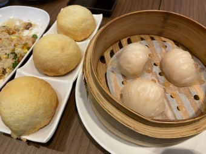
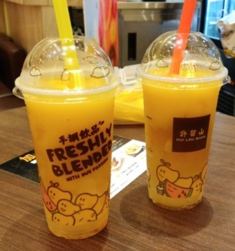

다시 여행할 기회를 준다면 고민없이 홍콩에 한 번 더 갈 생각이다.
그만큼 홍콩은 예뻤고 편했다.
홍콩이라는 국가는 서울보다 작기에 마음만 먹으면 1박 2일로 홍콩을 다 보고 여행할 수 있다.
홍콩
다시 여행할 기회를 준다면 고민없이 홍콩에 한 번 더 갈 생각이다.
그만큼 홍콩은 예뻤고 편했다.
홍콩이라는 국가는 서울보다 작기에 마음만 먹으면 1박 2일로 홍콩을 다 보고 여행할 수 있다.

